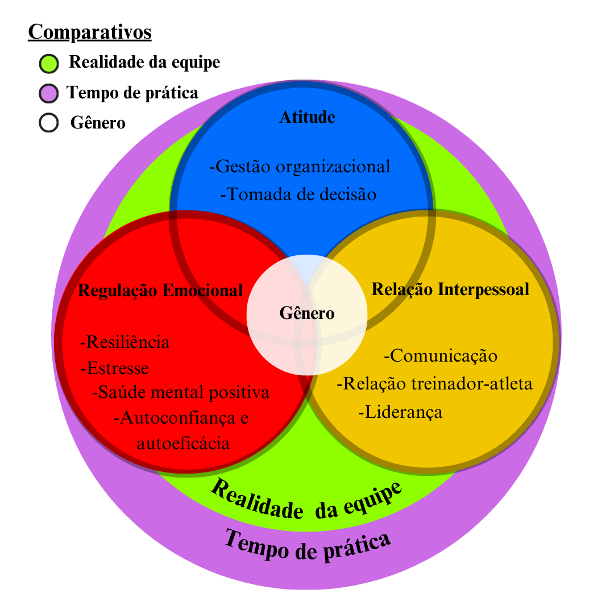

O vamos coletar?!

Este projeto de doutorado investiga os principais aspectos psicológicos presentes em treinadores (as). Ao se cadastrar e responder os questionários, você saberá seus principais resultados em três vertentes diferentes (Atitude, Regulação emocional e Relação interpessoal). Poderá comparar com a média dos outros treinadores (as) e receber dicas de intervenções, além de apoio especializado para tirar suas dúvidas. Tudo de graça.
Oferecemos uma análise detalhada de suas tendências psicológicas de forma gratuita. Basta responder os questionários.
Fornecemos as principais sugestões para melhorar os aspectos psicológicos defasados.
Ao participar da pesquisa, você estará em contato com profissionais que possam tirar suas dúvidas.
Cerca de 10 minutos para responder os três questionários.
O resultado aparece na hora, basta finalizar todos os questionários.
Você poderá refazer os testes a cada 4 meses.
Com o resultado, poderá realizar intervenções para melhorar possíveis defasagens.
Você já se deparou com muitas pesquisas focadas no treinador ou treinadora? Eu aposto que não. Os (as) treinadores (as) desempenham um papel central no desenvolvimento dos atletas e alunos, tanto tecnicamente quanto mentalmente. Ao entender os perfis psicológicos, este projeto contribui diretamente para a melhoria da performance de atletas e equipes.